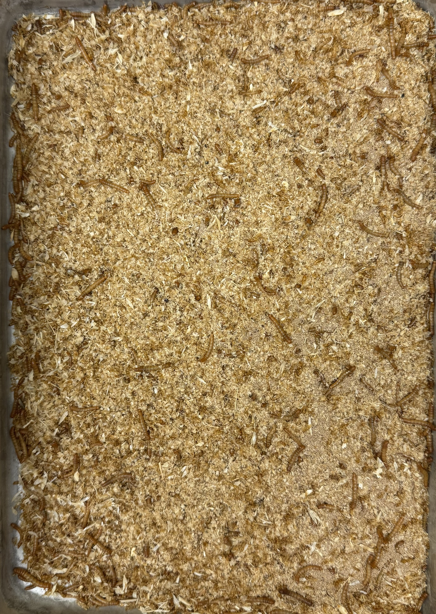

PROJECT 01
Undergraduate Research Assistant · Mealworm Growth Monitoring
RaMS Lab, UCR
Oct. 2025 – Present
Problem
Traditional growth monitoring involves significant time costs and manual work for measurement.
Approach
Engineered an end-to-end Computer Vision and Deep Learning pipeline using AISFormer for mealworm detection and width measurement in high-occlusion environments.
Insight
Built skeleton-based width measurement using distance-transform radius profiling, top-quantile filtering, and a normal-distribution z-score filter (>2.5σ) for outlier pruning.
